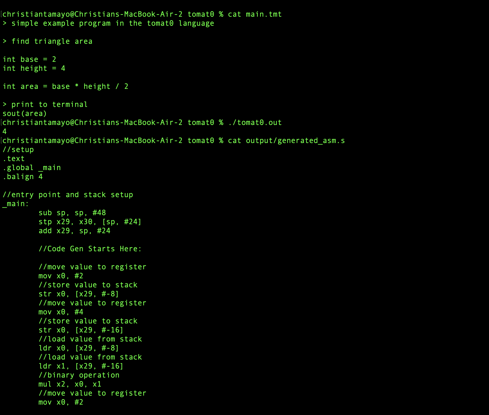

I am a 3rd Year at Western University doing a double major in Computer Science and Mathematics. While I've worked on full-stack projects, I prefer working on back-end and solving complex, algorithmic problems. My favourite programming languages are Java and C. Currently searching for an internship for when I finish my third year!
I wrote a custom compiler in C for my coding language. The language aims to be easy and quick to both type and read. It utlizizes a lexer and parser to create an abstract syntax tree, which is then traversed to generate ARM64 assembly instructions.
